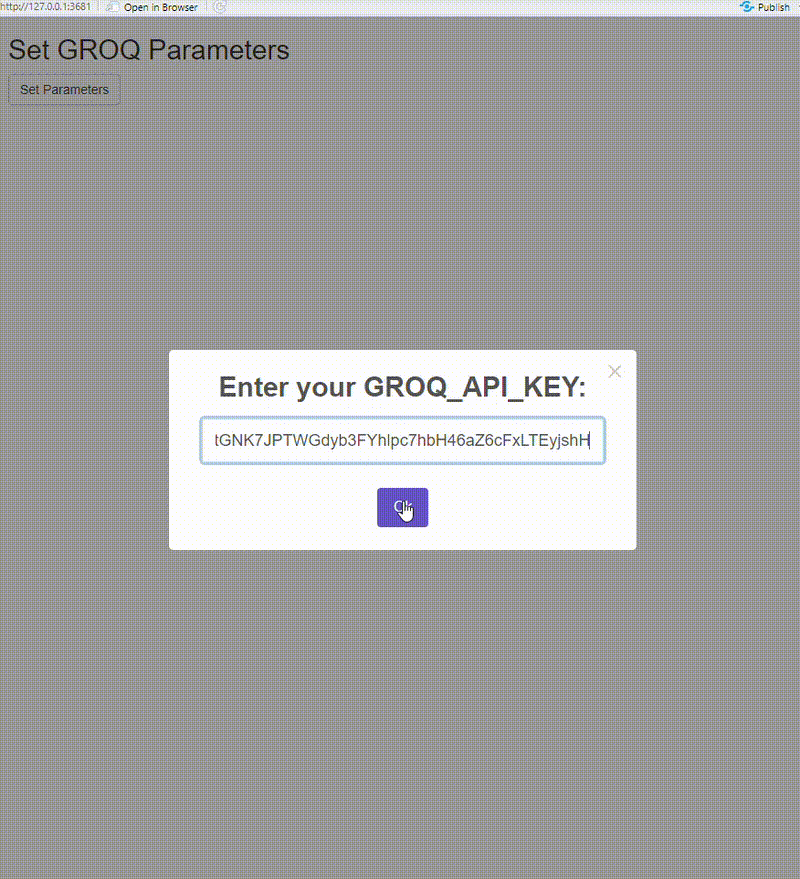
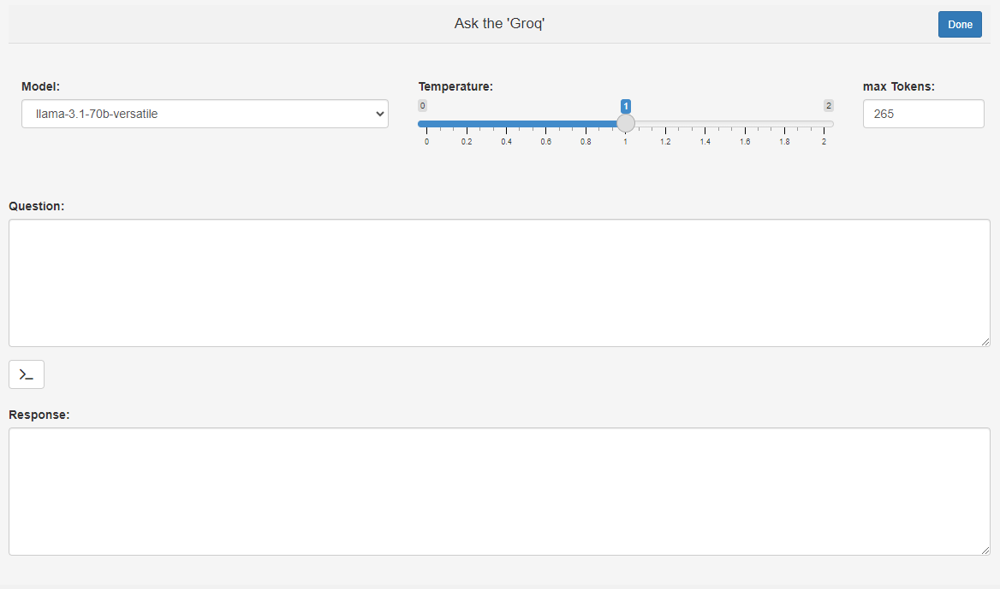

The R ecosystem just got a monumental upgrade with groqR, your AI-Powered R coding companion. This revolutionary package brings GroqCloud’s lightning-fast LPU (Language Processing Unit) technology directly to your R workflow. Built for developers who demand speed, precision, and simplicity, groqR now harnesses the DeepSeek-R1-Distill-Llama-70B model to deliver AI assistance at unrivaled speeds.
⚡ 10x faster than GPU-based solutions
🔒 Enterprise-grade data privacy
📚 Supports multiple LLMs (DeepSeek-R1, Llama-3, Mixtral)
🆓 Free tier available
The star of the show is ask(), groqR’s
Swiss Army knife function that queries general questions. With Groq’s
LPUs processing tokens 10x faster than GPUs, you get
answers in milliseconds — no more waiting for sluggish AI responses.
Example in Action:
ask("Who offers the fastest Large language models for free? Give only one word answer!")## [1] "Groq"Just copy the code or text and run the function in mind:
Coding Assistent: Generate Code for any
programming language coder()
Translate Code: From R to Python or any other
languages codeConverter()
Debug: Explains errors and suggests fixes
debug()
Document: Generates roxygen2 documentation from
raw code roxy()
Explanation: Adds comments to your raw code
codeComment()
Unit Tests: Generates unit tests for production
ready coding unitTests()
Code Optimization: Automatically rewrites slow
loops optimizer()
Name Suggestion: For functions, variables use
nameIt()
Translate Text: Translates any text to German or
any other language translater()
Paraphrase: Rewrite any text
rewriter()
# CRAN release
install.packages("groqR")API Setup:
Get free API key: GroqCloud Console
The on_startup function will initiate automatically
and guide you through setting up the necessary environment
variables.
Set the systemRole to something like “You are an expert assistant with a PhD-level mastery of mathematics, computer science and statistics,”
And the model to “deepseek-r1-distill-llama-70b” for instance.

In your RStudio go to Addins and select Ask ‘Groq’, which will open an interactive prompt in your Viewer, where you can choose between different models and adjust the temperature and the number of tokens to be used. Simply ask anything of your interest and hit the confirm button. The Done button lets you close the App. Similarly, you can mark or copy any text or code and use the other Addins as described below. Addin shortcuts will improve your efficiency.

Clarity in Seconds - codeComment()
codeComment("df %>% group_by(region) %>% summarise(sd = mad(income))")## [1] "\"df %>% group_by(region) # Divide into groups\n%>% summarise(sd = mad(income)) # Apply statistical functions\""Bridge Language Gaps - translater()
Convert Python/R code instantly:
codeConverter("np.linspace(0, 1, 5)", from = "python", to = "R")## [1] "`seq(0, 1, length.out = 5)`"That’s all! 🤯 Be sure to refer to the manual for details on each function’s specific arguments.
Empower your R workflow – where AI meets velocity. 🚀